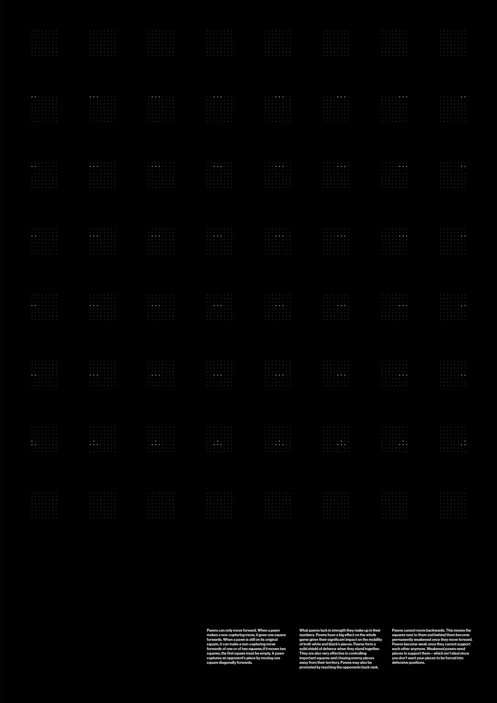

Phrases such as "A knight on the rim is grim" are used to teach players about the optimal placement of certain pieces on a chessboard, but are never represented in a visual way as to explain their logic.
In a six poster series, I visualised every potential movement that could be made from every legal position for a given chess piece; arranging 64 8x8 diagrams (one for each square) in an 8x8 grid as to reflect the layout of the board.
